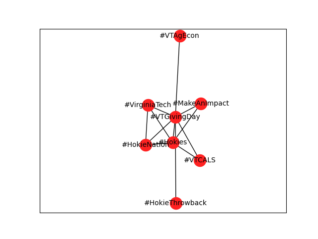
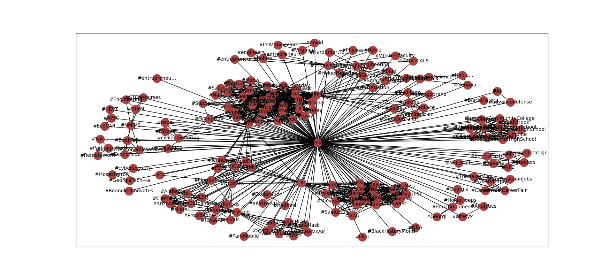
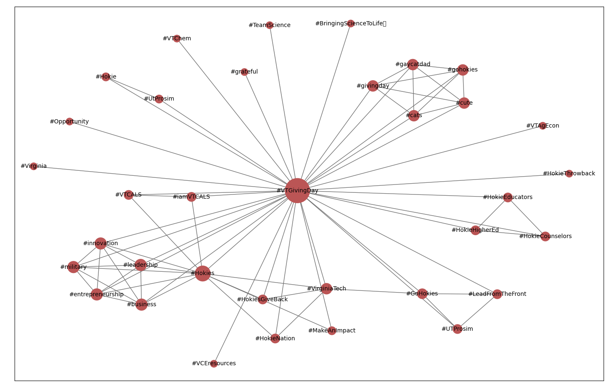
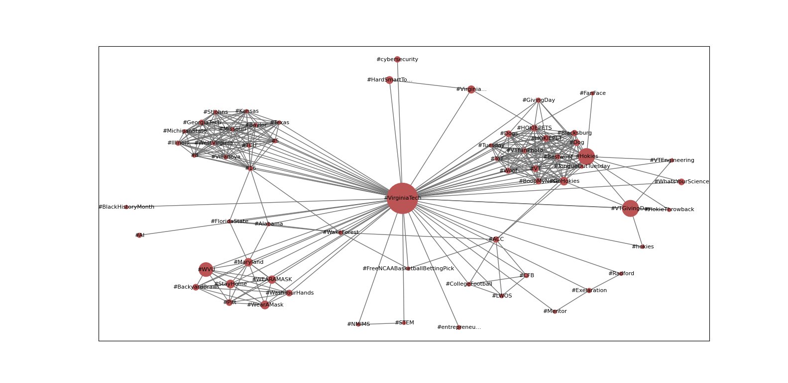
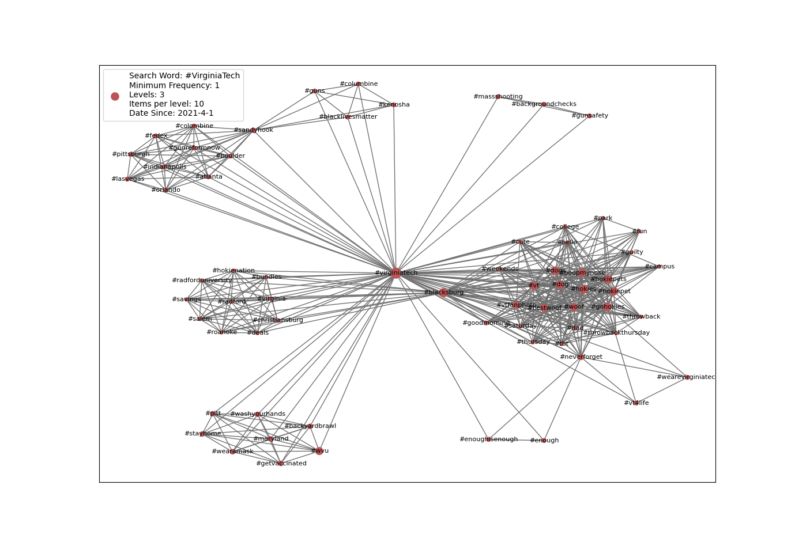
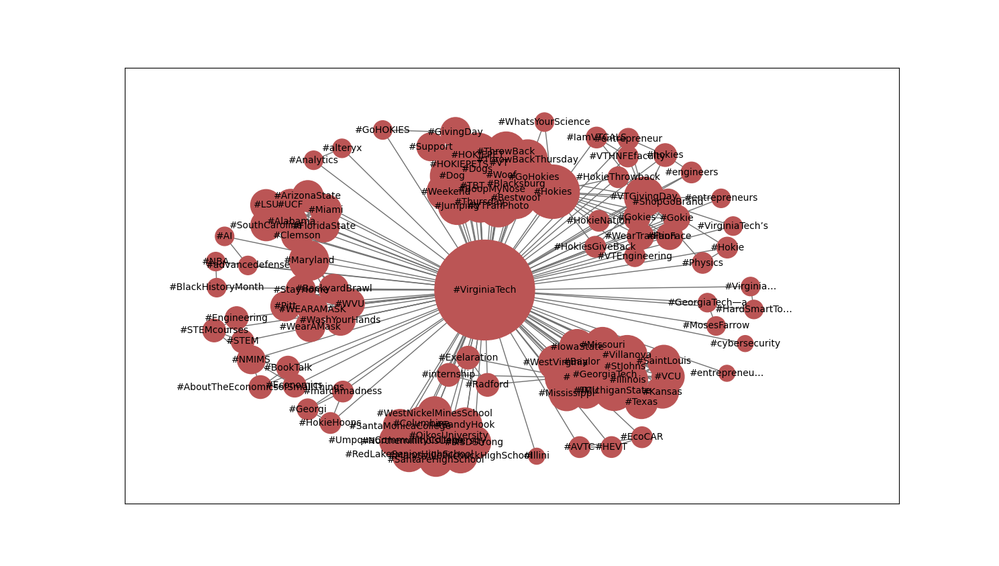

Mapping Twitter Hashtags
Introduction
The popular social media platform Twitter is a place where people post many short blurbs of text, occasionally accompanied by images or video. Included in many of these Tweets, as they are called, are special words or phrases known as hashtags. This report outlines the development progress of a program that visualizes connections between hashtags on Twitter, outlining what issues were run into during development and were fixed, and what opportunities there are for future continuation.
Background
According to Twitter’s user guides, a hashtag is always immediately prefaced by the hash symbol, ‘#’, and it cannot include any spaces or punctuation 1. First used in 2007 by web marketing specialist Chris Messina on Twitter, the hashtag was originally designed “to create groups of related Tweets,” 2 the hashtag is now a widely-used, cross-platform tool to link and group related posts and ideas.
Definitions
For the purposes of this program, each unique hashtag found in a Tweet was represented as a node, and an edge was drawn between any two hashtags found in the same Tweet.
Statement of Main Results:
Over the course of the semester, I was able to build a program that successfully reads in a given number of Tweets that use a certain hashtag, identifies any other hashtags also used in that Tweet, and repeats the process for each of the other hashtags found, as many levels out as specified. Then, the data is graphed, plotting each hashtag as a node and drawing an edge between any two hashtags used in the same Tweet. The size of each node is also represented relative to how many Tweets were found that used the given node’s hashtag.
Methodology
To begin, I needed to gain access to Twitter’s API by applying for a Twitter Developer Account and waiting for it to be approved. Twitter requires this to prevent malicious use of its data like creating spam bots or using personal information from users for nefarious purposes. Once the application was approved, I was able to get a consumer key and access token, which is necessary for using any library or API to gain access to Tweets.
To gather data, I used the tweepy library because it provides easy access to Tweets and has a built-in Cursor object to help stay within Twitter limitations on how many Tweets can be accessed in a certain timeframe.
To display the data graphically, I chose to use the NetworkX library. It provided a simple yet robust method of tracking and displaying nodes and edges.
For this project, the hashtags were modeled as a graph by using each unique hashtag found in the same Tweet as the specified “search word” hashtag as a node, and drawing an
For the first experiment, I performed a search for all Tweets containing “#VTGivingDay” that were posted between February 21, 2021 to February 26, 2021. The Giving Day event ran from 12:00pm February 24th to 11:59am February 25th, so the bulk of Tweets were likely to be posted within that time frame.
In total, I iterated through four versions of the program:
Version 1
The first version of this project was the most simple representation of the selected hashtag and its neighboring uses.
 Figure 1This image, generated on February 26, 2021, shows one of the very first runs of the program. On a very basic level, it worked very well; however there were still many underlying issues that needed to be fixed. When run with a large data set, as seen in Figure 2, the black edge color makes the text all but impossible to read. Aside from the readability, there were still logical issues too. Looking again at Figure 2, we can see in the lower middle of the graph, there is a node labeled simply “#” with quite a few connections to other hashtags as well. It is also apparent that many of the hashtags were ending abruptly with “...” and upon further investigation, it was discovered that only a partial text was being extracted from each Tweet, which was fixed by using the “.full_text” option instead of just “.text”. This fixed most of the issues surrounding this, but not all. It turns out that the “.full_text” option only worked for Tweets that were not Retweets, leaving a smaller subset of Tweets with abridged texts, resulting in some hashtags being partially or entirely missed.
 Figure 2Version 2
 Figure 3The image above is from a particular run of version 2 on February 26, 2021. The search word chosen was “#VTGivingDay,” particularly because the University’s annual “Giving Day” had ended the day before, and this specific hashtag was extremely prevalent over the course of the previous week in an attempt by Virginia Tech to advertise the event.
The major improvements from Version 1 to Version 2 were in the aesthetics of the visualization and in the ability to represent each node with a different size based on information relative to each node. To test if this would work , I started just by representing the size of each node relative to its degree.
Version 3
 Figure 4Version 3 included the ability of the program to represent the size of each node relative to the frequency of each hashtag appearing. This is a helpful feature in visualizing the relative significance of each hashtag that appears on the graph. Larger nodes signify nodes that appear more. In order to accurately keep track of the frequency of each node, I decided to use a python dictionary object, which allows easy mapping from a string, the hashtag in this case, to a number, its frequency.
The ability to track the frequency of each node also invites the ability to display only nodes that are at or above a certain minimum frequency. Because of this, I added a new parameter to the script, a “minimum_frequency” lower bound for Tweets to appear on the graph. When the number of Tweets searched reached 500 or 1000, sometimes the graph would be so cluttered that it was difficult to identify major themes in the hashtags used, so setting the minimum frequency to 2, 3, 4, or 5 would filter out clusters of Tweets that only appeared once or twice to make room for identifying the more popular ideas.
Version 4
With version 4, there were some big changes. For one, I added a new parameter called “levels”. This added the ability to check Tweets with not just the one search term but to recursively check each of the hashtags found in conjunction with the original term for the given number of times. This new feature allows for a more comprehensive look at relationships between different hashtags used in a given time period. This involved many changes to the program to incorporate this new feature by recursively calling the search_hashtag() function to each hashtag collected in node_list. This change also required tracking and passing in as a parameter the past search hashtags used so that the program would not overcount nodes by searching for itself multiple times. Similarly, it also required keeping track of each Tweet looked at in a list named “past_tweets” to prevent counting a hashtag more than once by accidentally checking the same Tweet multiple times in successive recursions.
In addition, I also added a “legend” that displays the given parameters for each run. In previous versions of the script, I had just been relying on my accuracy of including the information in the name of the saved image, but sometimes I would put the wrong information accidentally, mixing up one run from the other. This has led to my not knowing exactly how many Tweets were searched or the minimum frequency set when looking back over past graphs. By including the correct information on the image itself, this confusion can be eliminated, and it also makes it much easier to put the visualization into context by immediately knowing how many items per how many levels were used when creating the specific graph.
 Figure 5: This new version allows a display of the parameters set and allows multiple levels of checkingThis version also included some fixes of bugs that were causing the same hashtag to be treated as separate nodes because of capitalization differences. Currently, it just stores all of the hashtags in lowercase format to prevent, for example, “#Hokies” and “#HOKIES” being stored as separate hashtags when the tweepy Twitter search counts them as the same hashtag. While this solution provides accuracy in regards to counting and sorting unique hashtags, presenting the hashtags all in lowercase is not as ideal as proper case in my opinion.
Analysis
One thing that I noticed when developing and testing this program throughout the semester was how context so heavily influenced the results I got. For example, the most stark differences I found were when running the script on “#VirginiaTech”.
 Figure 6 Figure 7Figure 6 was generated on February 26, 2021, the day after Virginia Tech’s annual Giving Day event ended. Disregarding the cluttered graphics as the program was still in development at the time of that particular run, we can see that there is a notable cluster of hashtags related to the event, the main one being “#VTGivingDay”. Looking at Figure 7, this graph was generated on April 17, 2021, one day after the 14th anniversary of the mass shooting at Virginia Tech. The results between the two runs are very contrasting, given the timing of the runs and the fact that the program only grabs Tweets that were posted in the last two weeks. The April 17th run included many hashtags related to the April 16th anniversary, including hashtags such as “#sandyhook,” “#columbine,” “#enoughisenough,” that did not appear in any earlier runs. With the hashtag “#VirginiaTech” especially, we can see that not only the specific parameters given to the program, but the context of when the script is run can have an impact on the results that are generated.
Future Work
One major improvement that the next version of this program could have is to have the ability to store the data in between runs. This could most likely be done by either writing a full representation of each Tweet or simply a list of nodes and edges to a text file, and then reading from a given text file to create the graph. This would allow for examination of the data that was used in the visualization as well as the ability to run the program multiple times on the same data set.
Conclusion
Hashtags were designed to connect Tweets by topic, so through analyzing related hashtags, we can get a big picture of what kinds of topical discourse is happening on Twitter.
References
[1] “How to use hashtags.” Twitter Help Center. https://help.twitter.com/en/using-twitter/how-to-use-hashtags (accessed Apr. 23, 2021).
[2] B. Stone. “The hashtag at 10 years young.” Twitter Blog. https://blog.twitter.com/en_us/topics/product/2017/the-hashtag-at-ten-years-young.html (accessed Apr. 23, 2021).